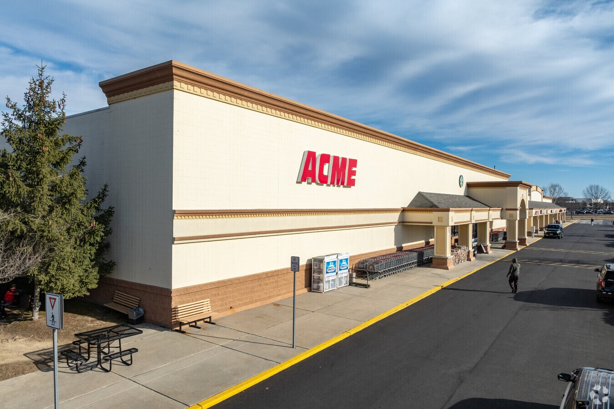
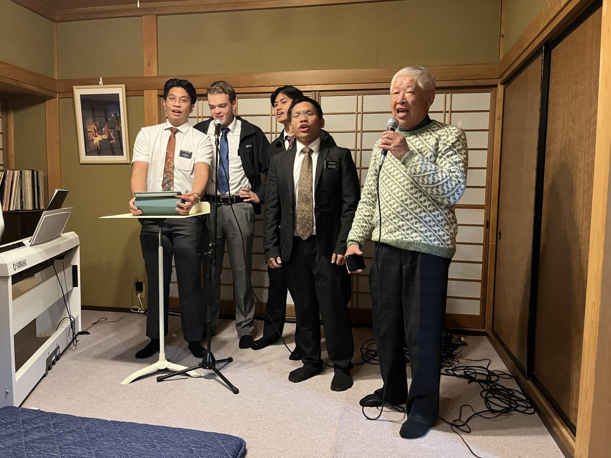
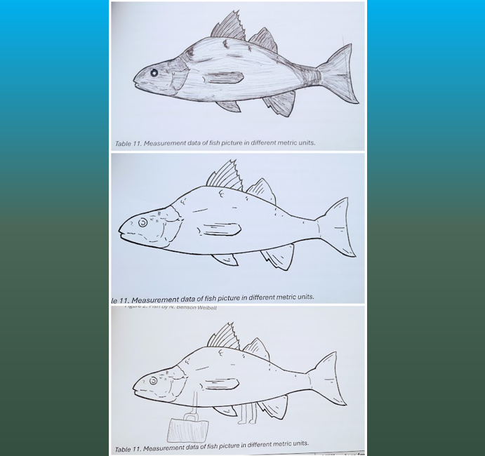

Experience
ACME

I have worked for three years at ACME (Albertsons Markets) as primarily a cashier. It involved customer service and training new employees.
Religous Volunteer
Mission
I spent two years as a religious volunteer for the Church of Jesus Christ of Latter-Day Saints in Tokyo, Japan and surrounding areas. The volunteer activities included educating about Christianity, teaching English, and teach Japanese (to immigrants to Japan).



Lab Manual Illustrator

I illustrated portions of a biology lab manual.